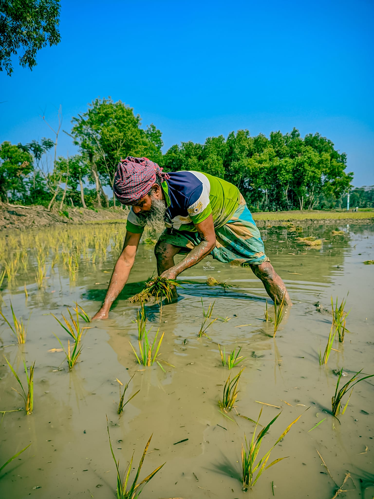
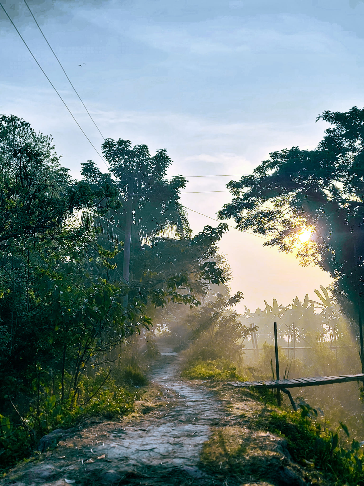
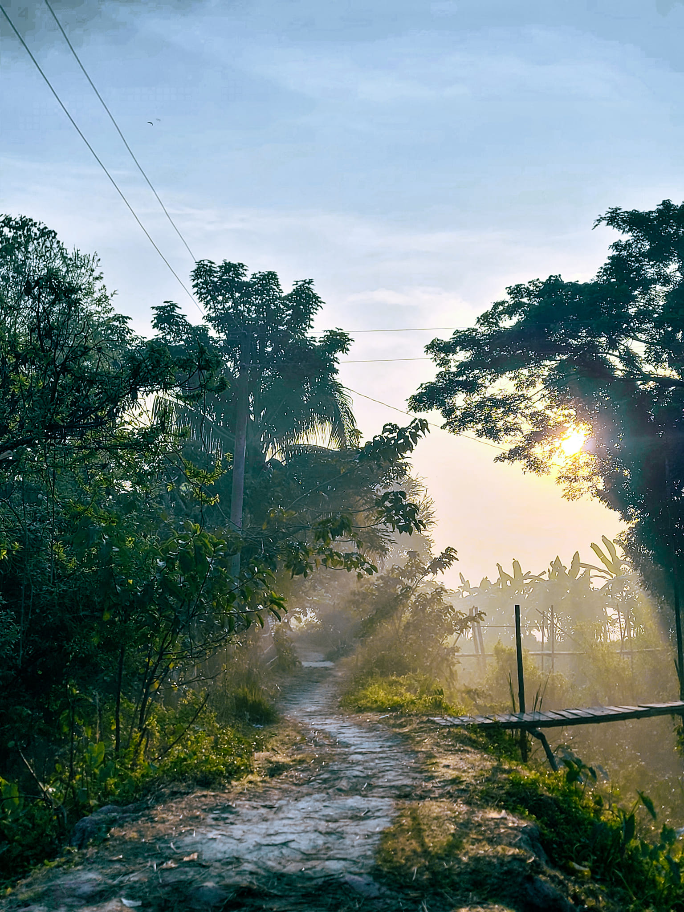
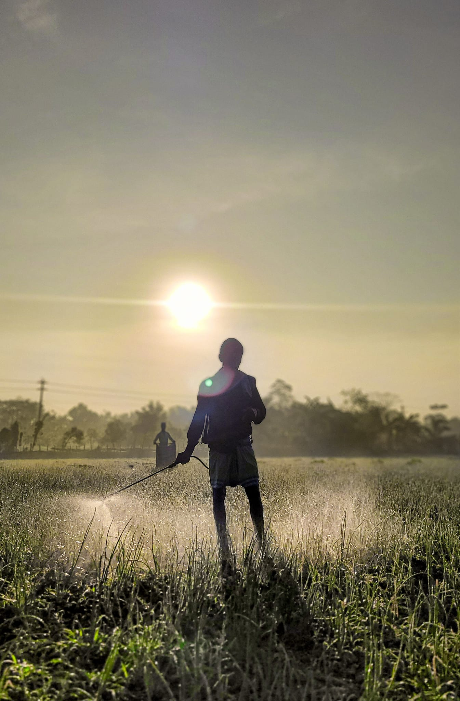

Natural Beuaty of Shariatpur
Shariatpur, a district in Bangladesh, is known for its natural beauty and rich cultural heritage. Situated in the central part of the country, Shariatpur is blessed with picturesque landscapes, serene rivers, and lush greenery. Here are some aspects of Shariatpur's natural beauty:

Riverine Beauty
Shariatpur is intersected by several rivers, including the Padma, Meghna, Arial Khan, and Palong. The rivers not only provide scenic views but also support the livelihoods of the local communities through fishing and agriculture.
 

Lush Greenery
The district is characterized by fertile land and extensive vegetation. Paddy fields, mango orchards, and palm groves adorn the countryside, creating a vibrant and green environment.


Wetlands and Haors
Shariatpur is home to numerous wetlands and haors (wetland ecosystems), which are essential for biodiversity conservation. These areas attract migratory birds and serve as breeding grounds for various aquatic species.
.jpg)
Sunsets and Sunrises
The wide expanse of sky over the rivers and fields offers breathtaking views of sunsets and sunrises. The vibrant colors reflecting off the water create mesmerizing scenes that attract photographers and nature enthusiasts.